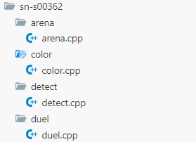

注：由于在这个网页上展示图片不方便，所以直接由代码块方式展现。
本场比赛共有 776 份文件夹。
本场比赛共有 2617 个文件被提交。
本场比赛共有 2665 个 main()。
本场比赛共有 5152 个 freopen，
其中有 116 个被注释。
1. 准考证小写人

2. cin << 人
#include<bits/stdc++.h>
using namespace std;
int main(){
freopen("arena.in","r",stdin);
freopen("arena.out","w",stdout);
int a;
cin<<a;
return 0;
}
3. freopen("") 人
//******* ***（这里是TA的名字我屏蔽了） SN-S00***
#include<bits/stdc++.h>
using namespace std;
int main(){
freopen("")
ios::sync_with_stdio(0);
cin.tie(0);
cout.tie(0);
return 0;
}
4. 洛谷人
...
const int N=1e5+10,L=1e6+10,M=1e5+10;
int n,m,l,vline,kkksc03;//汽车数量，测速数量，道路长度，限速
int d[N],v[N],a[N];//起始位置，初始速度，加速度
int p[M];
//到s的速度为：sqrt(v^2+2*a*s)
...
5. 吉吉人
...
if(n <= 8 && m <= 8) {
Subtask1::jiji();
}
else {
SubtaskA::jiji();
}
...6. 包不会人
...
int main(){
freopen(".in","r",stdin);
freopen(".out","w",stdout);
//包不会的
int n,m;
cin>>n>>m;
while(m--){
cout<<(int)(2*n+5*m+pow(2,m))%m;
}
return 0;
}
cin>>p[i];
}
// 不会了
cout<<3<<" "3<<33<<"\n";7. 游记人
//ok 读完题发现是神秘不可做题\ll
//算了已经不打算写了 神秘题没读懂题目啊 爬去看T2了
/*为什么感觉我这一场一直都在写暴力+特殊性质
学过的算法思想一点没用上，图论看起来也没考到，怎么个事呢？？？
没写拍子，一方面是我的正解已经很暴力了我也想不出来怎么比这个更暴力了
另一方面是对CCF数据的信任。。。。大样例看起来强度还行吧。。
不挂应该是160，一个我记得比历届一等线都高的分数，可能也是因为今年题太水了qwq
rp++,T1别挂别挂别挂别挂
挂了我跟CCF爆了啊啊啊啊！！！！
*/
8. Love CCF 人
...
signed main() { //geng buhui le
ios::sync_with_stdio(0);
cin.tie(0);
cout.tie(0);
return 0;
}//S nan... youcheng juruo le
/*
shangwu wo shuo le shenme
ganen CCF...
J haoxie
S buhui
woyao 140, woyao langou!
I LOVE CCF FOREVER!!!
*/
9. CCF 520 1314 人
...
int main()
{
freopen("color.in","r",stdin);
freopen("color.out","w",stdout);
cout<<"520CCF";
return 0;
}
...
int main()
{
freopen("arena.in","r",stdin);
freopen("arena.out","w",stdout);
cout<<"1314CCF";
return 0;
}
10. CCF 保佑人
...
int n,a[100005],dem,sx=1,die[100005],da;
int main()
{
freopen("duel.in","r",stdin);
freopen("duel.out","w",stdout);
//CCF bao you!!!
//I love CCF
//CCF love me
cin>>n;
for(int i=1;i<=n;i++) cin>>a[i];
sort(a+1,a+n+1);
...